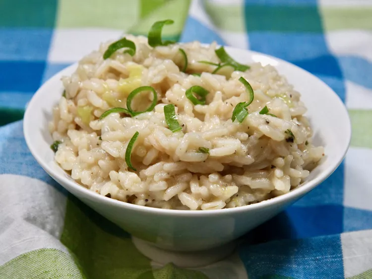

Risotto
Risotto
This easy risotto is made with green onion and Parmesan cheese. This rice
dish is fast and doesn't require constant stirring!

Risotto is an Italian rice dish cooked with broth until it reaches a
creamy consistency. The broth can be derived from meat, fish, or
vegetables.
Ingredients
- 2 tablespoons butter
- ⅔ cup sliced green onion
- 1 ⅓ cups uncooked long-grain rice
- 4 cups water
- 1 teaspoon chicken bouillon granules
- ¼ teaspoon ground black pepper
- ¾ cup grated Parmesan cheese
Directions
- Melt butter in a large skillet over medium-high heat.
- Cook and stir green onion in hot butter briefly, then add rice.
- Cook and stir until rice is toasted, 2 to 3 minutes.
- Pour in water; season with chicken bouillon and pepper.
- Bring to a boil, then reduce heat to medium-low.
- Cover and simmer for 20 minutes.
- Remove from heat. Let stand, covered, for 5 minutes.
- Stir in Parmesan cheese.